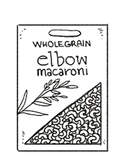

wholegrain macaroni
Macaronic, or 'elbow' pasta. One portion is 56 g (2 oz).
whole wheat flour
Whole wheat flour, or wholemeal flour, is a powdery substance derived from grinding wheatberries. It is typically mixed with lighter white flours. This type of flour contains both the bran and germ, and is typically made from hard winter red wheat (in the US).
Weight: 1 cup | 4 oz | 113 g